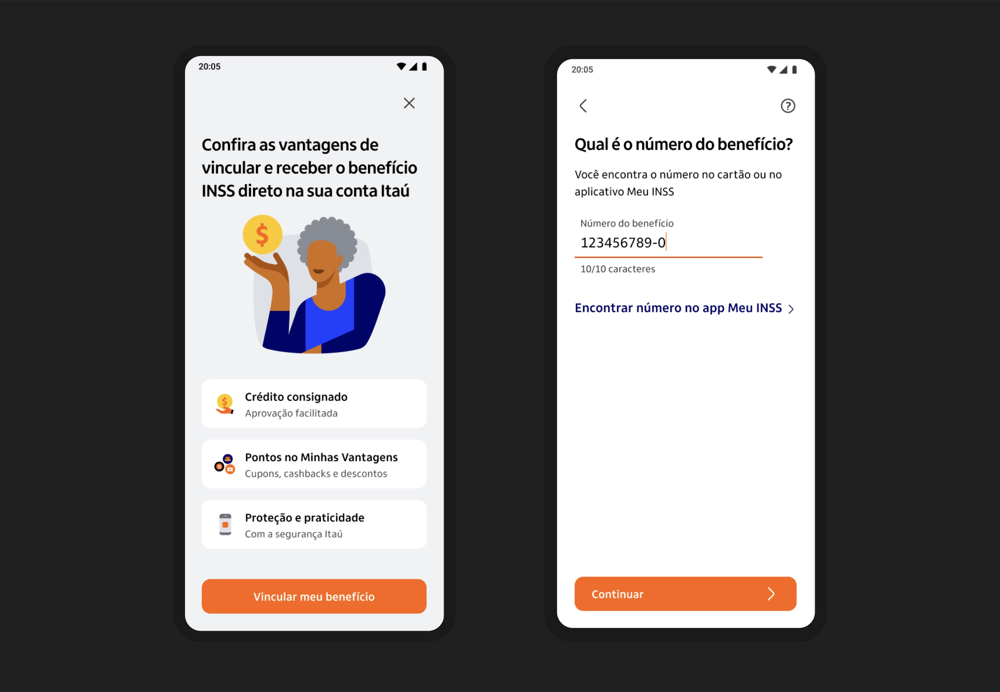
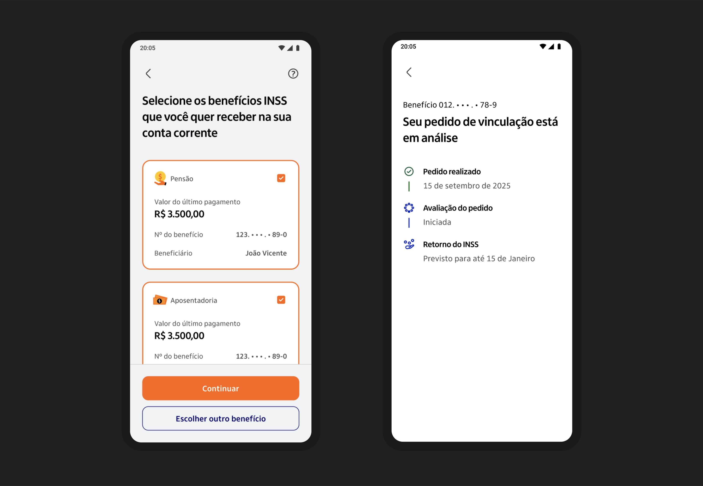

What I did
- Discovery and research with retired customers
- Information architecture for the benefits hub
- Interaction design for linking, unlinking and status
- Content design for the request and its waiting states
- Prototyping and usability testing
- Handoff and build support
Overview
A dedicated space within the Itaú app where retirees can link and manage their financial benefits in one place. Retired customers often juggle several income sources — INSS retirement, survivor pensions, temporary leave allowances — each living in a different channel with its own payment dates and rules. For an audience that values stability above all, not knowing what’s arriving and when is a constant source of anxiety.
We consolidated it into a single, clear view: simplified navigation, a visual hierarchy that scales across touchpoints, and an easy path to add, consult and update each benefit.
3 takeaways
- 05A number nobody has memorised
- 01Nobody has exactly one benefit
- 02Saying “wait” without losing anyone
05
A number nobody has memorised
The whole flow hinges on a ten-digit benefit number printed on a card most people have not looked at in years. Rather than treat that as the customer’s problem, we wrote a step-by-step for finding it inside the government app, put it one tap from the field, and let people leave and come back without losing what they had typed.
01
Nobody has exactly one benefit
The first version assumed a single benefit per person. Support tickets said otherwise — pensions and retirements stack, often across family members. So the picker became multi-select, each card carrying the last payment amount and the beneficiary name, because that is how people actually tell two benefits apart.

02
Saying “wait” without losing anyone
The INSS can take up to four months to answer. A spinner would have been a lie. The status timeline names every stage, dates the ones that have happened, and gives an honest outer bound for the one that has not — so the answer to “did it work?” is on the screen instead of in a phone queue.
